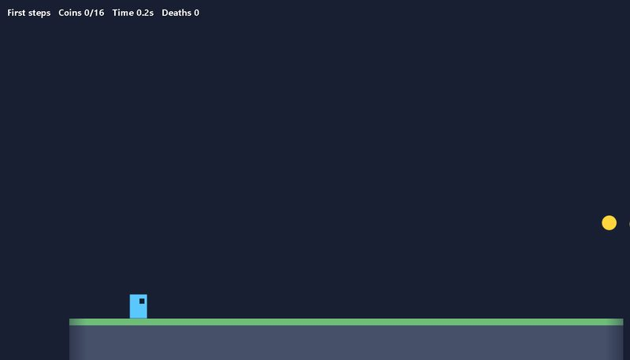
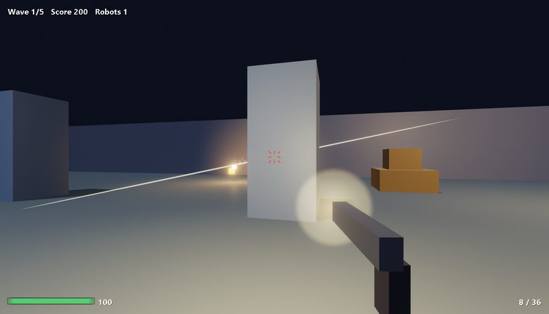
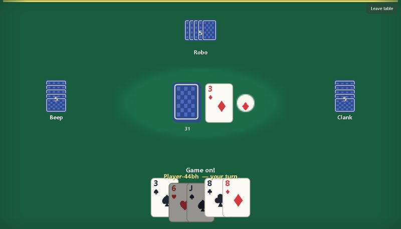

Build fast browser games, alone or together.
A modular, zero-dependency JavaScript game engine with 2D and 3D rendering, real-time and turn-based multiplayer, and tools to make, test and ship your game.
npx create-game my-game --template 3d
cd my-game && npm run devWhy this engine
Built for games that need to feel instant, and small enough to understand completely.
Fast, fair multiplayer
An authoritative server, client prediction, delta snapshots and interest management keep a game responsive over a bad connection and small on the wire.
2D and 3D, WebGPU first
One renderer API over WebGPU, WebGL2 and Canvas2D. Shadows, bloom, particles, glTF and a character controller are included.
Every system is optional
Twenty-six small packages with enforced import rules. Take the renderer without the networking, or the server without the renderer.
Deterministic by design
Fixed timestep, seeded randomness and a maths library that gives the same bits in Node, Chrome and Firefox: replays and tests need no browser.
Zero dependencies
Plain JavaScript with JSDoc. No bundler, no framework, nothing to audit but this repository. It runs from source and builds to static files.
Tools included
A scene editor, a build tool, a debug overlay with a packet inspector, a load tester, a mod sandbox and a project generator.
Learn by building
Three complete games, each with a written walkthrough and tests. Read the rules, then change them.

2DA platformer
Tile levels, jumps that feel right (coyote time, jump buffer), enemies, springs, sound made in code.

3DA first-person shooter
Ray-cast shots with headshots, robots that see you and aim, waves, shadows, bloom and particles.

MultiplayerAn online card game
Hidden hands, matchmaking, ratings, a leaderboard, robots for empty seats and reconnecting.
Where to go next
Start here
Pick the packages for the game you want to make and get it running in five minutes.
How it works
The layers, the loop, the rules that keep the packages apart, and why.
Multiplayer, explained
Lag, prediction, interpolation and deltas in plain language, with pictures.
API reference
Every export of every package, generated from the source.